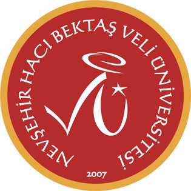

<main class="custom-layout">
    <h1 style="text-align: center; border-bottom: none; margin-bottom: 30px;">Education</h1>

    <div class="education-container">
        <div class="edu-item">
            
            <div class="edu-details">
                <strong>Ph.D. in Industrial Engineering</strong> (January 2017 — May 2020)<br>
                <em><a href="https://www.utk.edu/" target="_blank">The University of Tennessee</a>, Knoxville, TN, USA.</em>
                <ul class="styled-list">
                    <li>Dissertation: <a href="https://trace.tennessee.edu/cgi/viewcontent.cgi?params=/context/utk_graddiss/article/7685/&path_info=utk.ir.td_13642.pdf" target="_blank">Economic Feasibility of Adopting Additive Manufacturing for Low-volume Demand</a></li>
                </ul>
                
                <br>
                
                <strong>M.S. in Industrial Engineering</strong> (August 2015 — December 2016)<br>
                <em><a href="https://www.utk.edu/" target="_blank">The University of Tennessee</a>, Knoxville, TN, USA.</em>
                <ul class="styled-list">
                    <li>Thesis: <a href="https://trace.tennessee.edu/cgi/viewcontent.cgi?article=5503&context=utk_gradthes&httpsredir=1" target="_blank">A Mixed Integer Linear Programming Approach for Developing Salary Administration Systems</a></li>
                </ul>
            </div>
        </div>

        <hr class="edu-divider">

        <div class="edu-item">
            
            <div class="edu-details">
                <strong>B.S. in Business Administration</strong> (September 2008 — June 2012)<br>
                <em><a href="https://www.nevsehir.edu.tr/en" target="_blank">Nevsehir University</a>, Türkiye.</em>
            </div>
        </div>
    </div>
</main>
